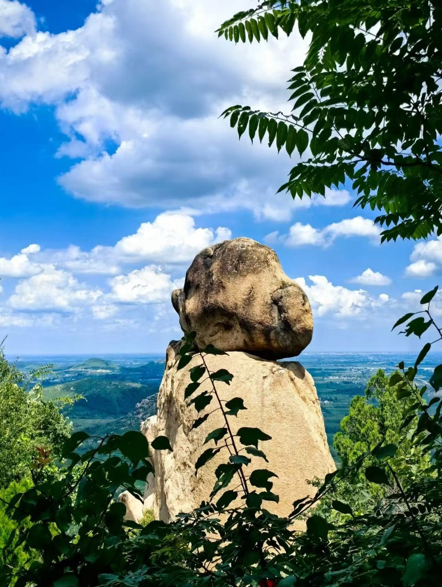
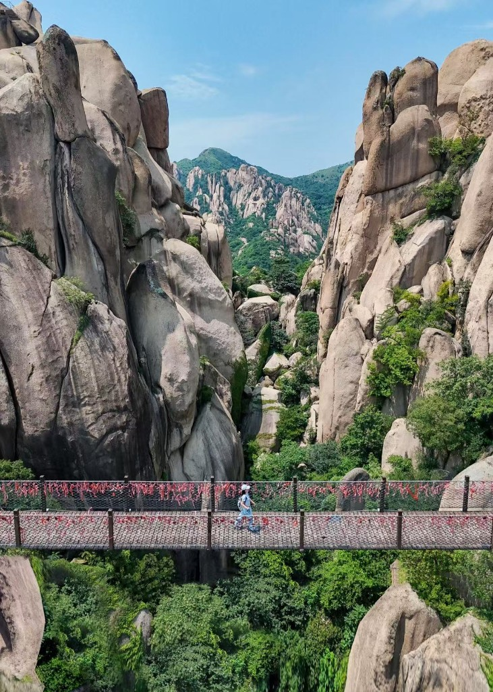
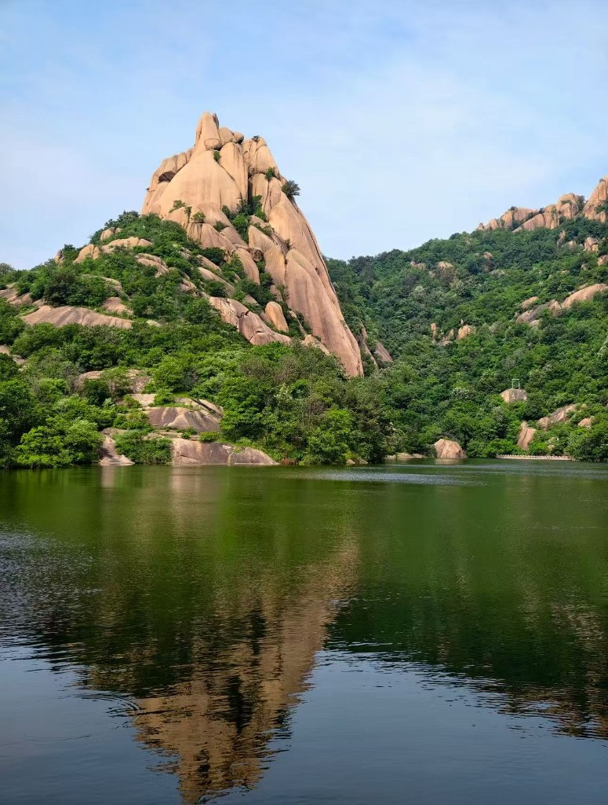
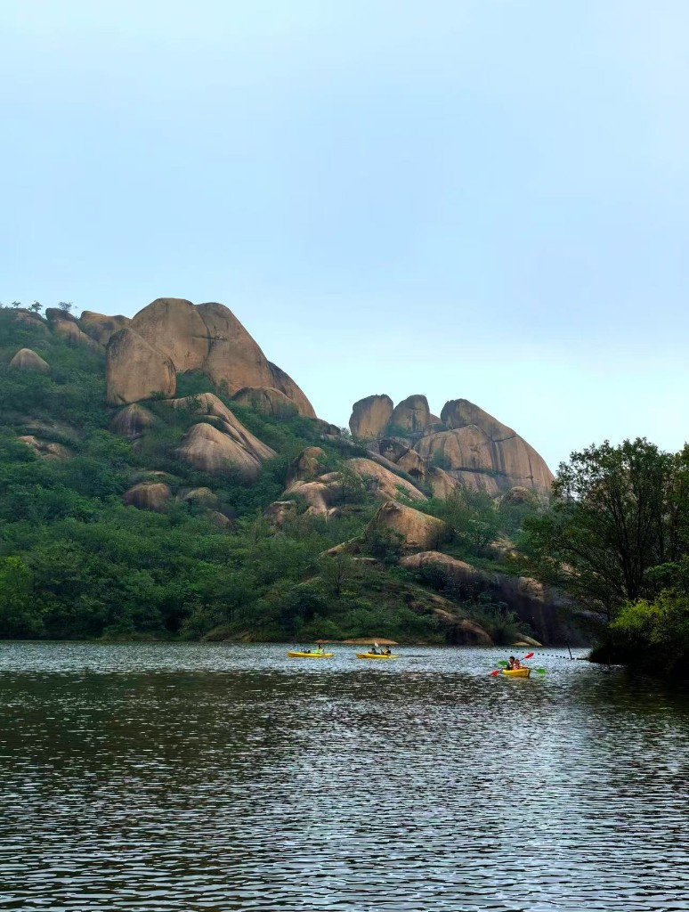

主要景点

南山：奇石探险与西游印象
这是景区的精华所在，怪石林立。在这里可以看到体型巨大、堪称“猴祖宗”的原生石猴，以及睡唐僧、醉八戒组成的天然“师徒取经图”。核心地质奇观一线天、飞来石也在此处，黑风洞则是《西游记》的取景地之一。

北山：山巅远眺与人文石刻
走过南山吊桥即达，最高峰天王顶海拔500多米，适合俯瞰平原风光。这里还有唐代大书法家颜真卿留下的“别是洞天”摩崖石刻，文化底蕴深厚。

秀蜜湖：因紧邻蜜蜡峰而得名
蜜蜡峰古时野花多，蜂蜜沿岩壁流下，远看像涂了蜜蜡，山下的湖水便得名“秀蜜湖”，取风景秀丽、湖水甘冽之意。传说至今湖水还带有一丝甜味。湖面开阔，能清晰看到蜜蜡峰倒映其中。从这里开始登山之旅。

琵琶湖：野趣自然与地质科普
位于西南端，湖水因形似琵琶得名，野趣盎然。附近有地质科普园，适合带孩子的家庭了解地质知识。